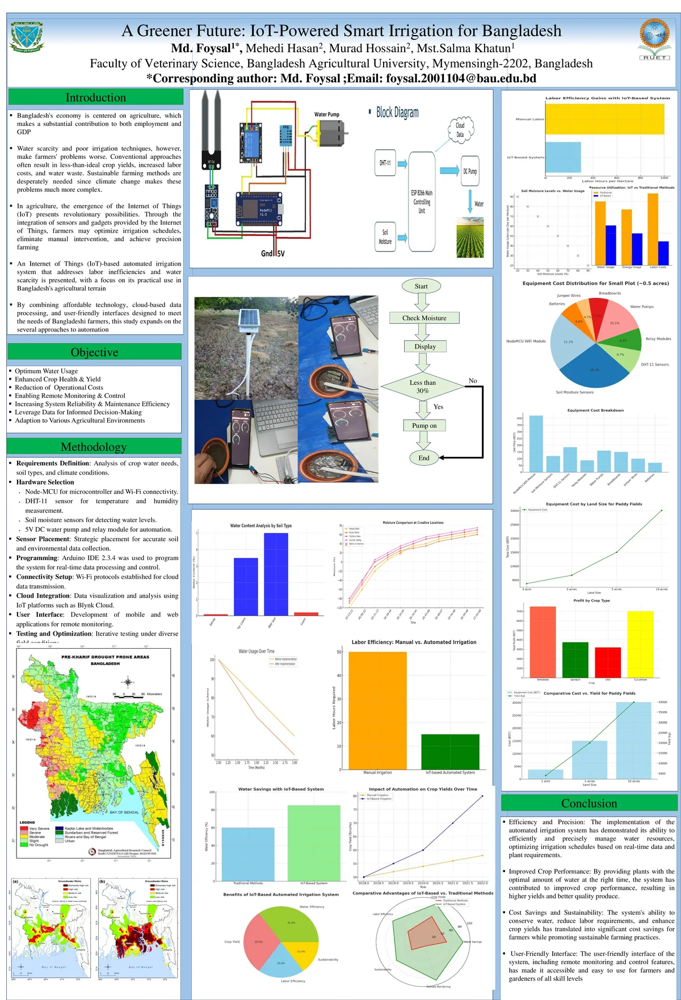

⌁
IoT irrigation
Sensor-integrated water control and operational visibility.
PRECISION AGRICULTURE · IOT · SENSOR-BASED RESOURCE CONTROL
My agricultural research interests grow from collaborative smart-irrigation and climate-smart agriculture work, supported by transferable industrial sensing and automation experience. I do not present my factory projects as completed agricultural field trials.

Only this research track
These themes are selected specifically for this specialization.
Sensor-integrated water control and operational visibility.
Transparent indicators for water-use and agricultural decisions.
Transferable sensor/actuator integration from industrial engineering.
Evidence-led methods
Define agricultural constraints and baseline practice
Select suitable water/soil/environmental sensors
Prototype and log automated decisions
Design controlled field validation rather than claim it prematurely
Selected work
Only the projects that materially support this track are featured.
Collaborative ICAMBE 2025 poster exploring sensor-supported irrigation and water-saving decision logic for Bangladesh.
My involvement: Collaborative poster contribution
Evidence: Poster-level research; no verified field-trial water-saving percentage reported.
 Collaborative research
Collaborative research
Collaborative exploration of climate-smart farming approaches and sustainable agricultural resource use.
My involvement: Collaborative research participation
Evidence: Collaborative presentation/research theme, not a completed engineering prototype.
Future research
Which low-cost sensors can support robust irrigation decisions in field conditions?
How can irrigation-control policies be evaluated against observed water-use and plant response?
I welcome discussions with research groups whose work connects to Agricultural Mechatronics & Precision Agriculture.
Academic profile and contact ↗